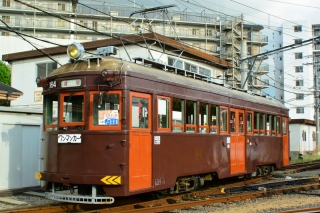
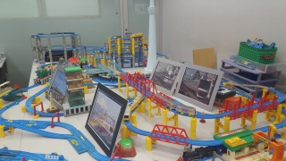

●新歓行事
今年の新歓旅行は豪華二本立て！4/26(日)に江ノ島旅行、5/23(土)に大回り乗車を行いました。詳細は個別ページへどうぞ。
→江ノ島旅行のレポートはこちら！
→大回り乗車のレポートはこちら！
●合宿
8/21(金)から23(日)にかけて、今年は京阪神にて行いました。
宿泊地大阪を起点に、各会員思い思いの活動をしました。
また22(土)には、小金井と合同で大阪の下町を走る阪堺電鉄にて貸切電車を運行いたしました。
この場を借りて、協力してくださった阪堺電気鉄道様にお礼を申し上げます。
●自主法政祭
10/31(土)から11/3(火祝)の間、外濠校舎２階S202教室で出展しました。
Nゲージ走行展示、写真展示、電車でGO試遊台設置、「Carrier」頒布のほか、去年好評を頂いた「プラレールあみだくじ」がパワーアップして再登場！ビッグになって帰ってきました。
プラレールレイアイト中に組み込まれたあみだくじコースは圧巻！
今年も多くの方がご来場くださいました。ありがとうございました。
●Carrier関連
70号を迎えたCarrier、今年のテーマは「京阪神の鉄道」。会員の合宿での活動の成果や貸切報告など、多くの記事が集まりました。
学祭での頒布に加え、小金井鉄研のブースにお邪魔してコミックマーケットでも頒布しました。
購入してくださった方々、ありがとうございました。
|

▲合宿・阪堺電車貸切

▲学祭・プラレール
|